Duration5N-6D
Starting Price₹25,499/-
Pick-up and DropGuwahati
Itinerary
Dates & Costing
Other Info
about
about
Meghalaya- A Potpourri of Beauty & Culture
Confused about choosing your next travel destination? Wondering whether to go trekking in forests, or take a dip in blue lagoons or just relax by the beachside? What if we tell you there exists a magical land very much in India that offers all of these activities and many more without burning a hole in your pocket? Sounds dreamy, right? Well, pinch yourself to reality because WanderOn is taking you all the way to the abode of clouds with our Meghalaya tour package!
Charming Landscapes If there’s one word for Meghalaya, it is exotic. It is one of the gems of Northeast India. Don’t get us wrong if we say it is one of the most beautiful seven sisters! That is because Meghalaya is a potpourri of vivid landscapes. It is indeed God’s own garden with lush green mountains, mysterious caves, sparkling rivers, and some majestic waterfalls. Being the recipient of maximum rainfall, Meghalaya has every hue of green in its forests. It surely is a photographer’s paradise.
Richness of Culture Home to the Khasi and Garo culture, Meghalaya boasts of its unique cuisines, vibrant clothing, and melodious folk music. Though it has a moderate climate round the year, the best time to visit Meghalaya is during autumn. It is then that the famous Wangala drum festival showcases the best of its culture. Its capital Shillong, popularly known as ‘The Rock Capital of India’, has a peppy evening vibe. With scrumptious food and jamming sessions, the cafes at Shillong are so charming they would surely leave you wanting for more. Apart from cafes, there are a lot of places to visit in Shillong. The Umiam Lake, Elephant Falls, and evergreen forests are a few major attractions. There is no doubt as to why the British named Shillong as the Scotland of East.
Most Scenic Villages of Asia Speaking of other places, the true essence of Meghalaya tourism lies in its villages. Here cleanliness is a culture that is practiced so dedicatedly, that the Village Mawlynnong is titled as the cleanest village of Asia! The Living Roots bridges at Nongriat Village are so mystical they seem to be straight out of some Peter Pan movie! Also, if you have seen those pictures of a slender boat over crystal clear waters then you already know what boating in Umngot River at Dawki Village looks like. But hey, only if looking at a picture was enough, we all would have traveled the world, right? Since that is far from being possible, you need to pack your bags and get ready to unravel the hidden beauty of NorthEast India with Wanderon’s Meghalaya tour package.
Explore With WanderOn Whether you are a bunch of friends or you move solo, Wanderon always takes care of your needs while designing the itinerary and Meghalaya Chapter is no different. We’ve curated the best Meghalaya tour itinerary so that you can enjoy every aspect of this beautiful place. All this and more at super affordable prices! So don’t just sit there thinking because we can already hear the abode of clouds calling! Join WanderOn’s next Meghalaya batch and become a part of India’s coolest travel community!
Charming Landscapes If there’s one word for Meghalaya, it is exotic. It is one of the gems of Northeast India. Don’t get us wrong if we say it is one of the most beautiful seven sisters! That is because Meghalaya is a potpourri of vivid landscapes. It is indeed God’s own garden with lush green mountains, mysterious caves, sparkling rivers, and some majestic waterfalls. Being the recipient of maximum rainfall, Meghalaya has every hue of green in its forests. It surely is a photographer’s paradise.
Richness of Culture Home to the Khasi and Garo culture, Meghalaya boasts of its unique cuisines, vibrant clothing, and melodious folk music. Though it has a moderate climate round the year, the best time to visit Meghalaya is during autumn. It is then that the famous Wangala drum festival showcases the best of its culture. Its capital Shillong, popularly known as ‘The Rock Capital of India’, has a peppy evening vibe. With scrumptious food and jamming sessions, the cafes at Shillong are so charming they would surely leave you wanting for more. Apart from cafes, there are a lot of places to visit in Shillong. The Umiam Lake, Elephant Falls, and evergreen forests are a few major attractions. There is no doubt as to why the British named Shillong as the Scotland of East.
Most Scenic Villages of Asia Speaking of other places, the true essence of Meghalaya tourism lies in its villages. Here cleanliness is a culture that is practiced so dedicatedly, that the Village Mawlynnong is titled as the cleanest village of Asia! The Living Roots bridges at Nongriat Village are so mystical they seem to be straight out of some Peter Pan movie! Also, if you have seen those pictures of a slender boat over crystal clear waters then you already know what boating in Umngot River at Dawki Village looks like. But hey, only if looking at a picture was enough, we all would have traveled the world, right? Since that is far from being possible, you need to pack your bags and get ready to unravel the hidden beauty of NorthEast India with Wanderon’s Meghalaya tour package.
Explore With WanderOn Whether you are a bunch of friends or you move solo, Wanderon always takes care of your needs while designing the itinerary and Meghalaya Chapter is no different. We’ve curated the best Meghalaya tour itinerary so that you can enjoy every aspect of this beautiful place. All this and more at super affordable prices! So don’t just sit there thinking because we can already hear the abode of clouds calling! Join WanderOn’s next Meghalaya batch and become a part of India’s coolest travel community!
videos
videos
photos
photos
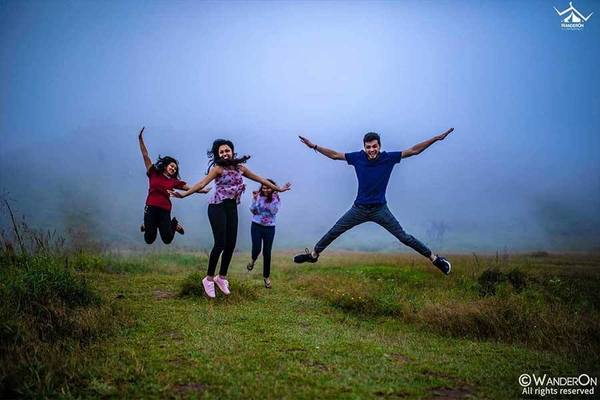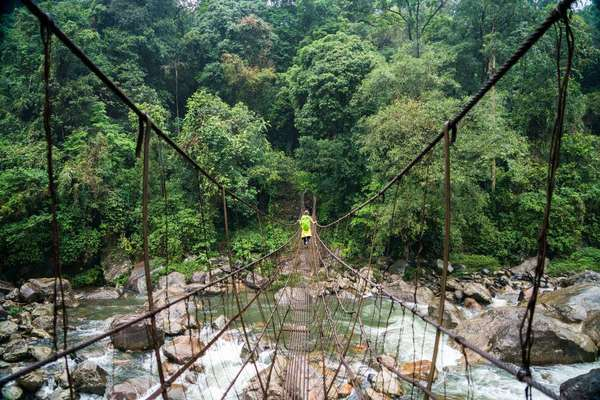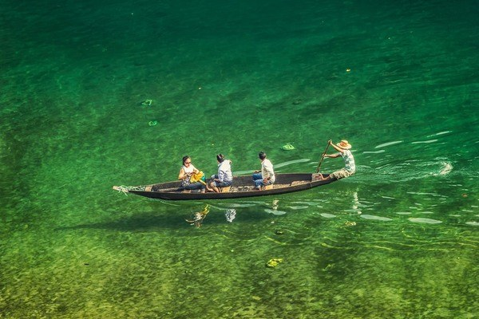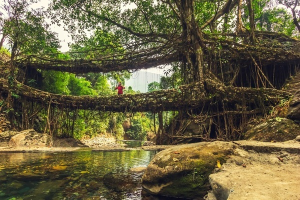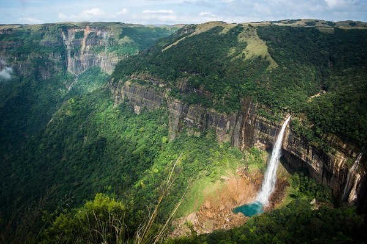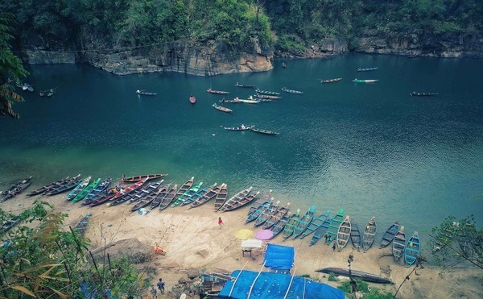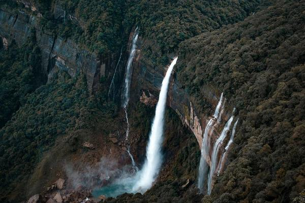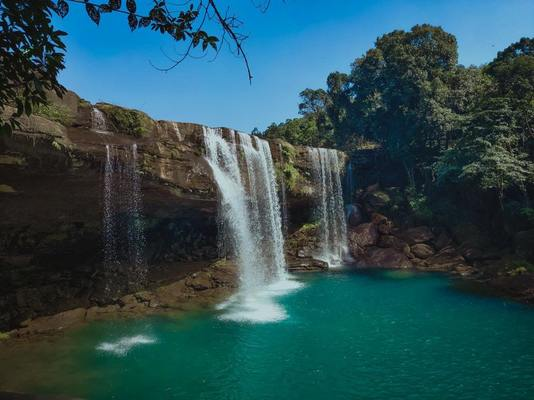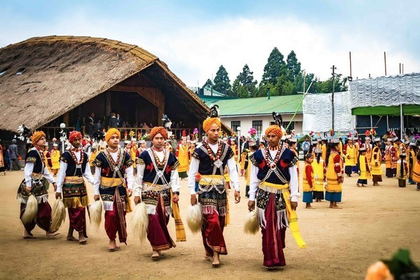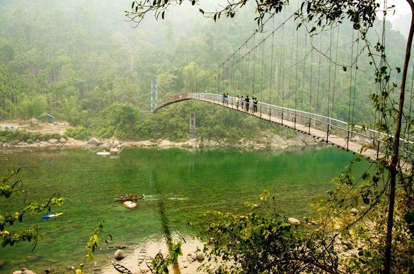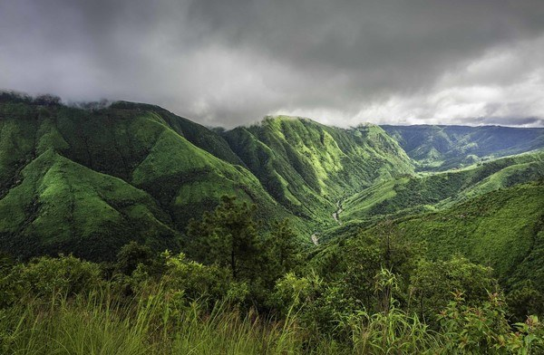
Back to Trip
testimonials
testimonials
★★★★★I had opted Meghalaya package in November 2019. An experience to cherish and remember for ever. They have planned the sights to visit, quite well for 6 days. Went there solo and met amazing people in the group. It was definitely fun with the whole lot.
Place review:
Meghalaya is not yet commercialized at the moment and we see a decent crowd. The nature by itself is soothing and you get to do water activities in crystal clear water during this time. The culture and people are something that you must see and explore.
If you're traveling solo, WanderOn is the best and you need not have any inhibitions about being a solo female traveller which I had initially. You will definitely feel comfortable.
We had Sandeep as our Captain a sweet and amazing man. Kept us engaged and entertained throughout. They changed our itinerary a bit to visit a place Wei Sawdong which a travel companion chose to visit. Hence they can be flexible.
A great travel partner - WanderOn
vinuthag2016
9 Nov, 2019★★★★★Wanderon is worth the rating you see everywhere.
I’ve been to Meghalaya with Wanderon and it became one of the best trips I’ve toured in my life
I always say more than the place the company you have matters ..... so if Meghalaya was a 10/10 place WanderOn made it a 15/10 with their amazing customer service.
One amazing fact is they are pretty flexible to take you to new places other than itenary , we were the first group which went to Wai Sawdong falls , which we asked for and it was truly a great gesture by Wanderon to accommodate that in our itenary.....
All other travel groups take you to Dawki .... but WanderOn takes you up the hill to Kshonpedeng ,this is the starting point of dawki crystal clear lake and is way better than Dawki .... these guys are real professionals and make the trip worth every penny you paid ...
They stay they provide is very cozy clean and comfortable with no complaints
Our group captain Sandy was the star of the show ... can’t thank him enough for his Jam sessions , bonfire and all the amazing stories he had to share about his other trips
If you are a solo traveller wanderon is your best buddy!!!!
abhishekpawar23
23 Nov, 2019★★★★★I completed my first solo trip with Wanderon last month for Meghalaya and it was quite amazing. The quality of stay, properties & most important our group captain's "Sandy" cool , supportive & friendly company was icing on the cake. He is quite an experienced traveller, plays guitar & sings song very well. We had great jamming sessions with him during the trip. It was a memorable experience travelling with Wanderon. I highly recommend them for your future group travels
rajatpasri
16 Mar, 2019★★★★★I recently visited meghalaya with wanderon group. Intially i had so many questions and fears as i was travelling solo for the first time. But i must say wanderon has made all the arrangements like accomodation, food, travel plan and everything soo perfectly. And our trip leader "Sonal" she is just so amazing. She handled everything so perfectly and left no stone unturned to make sure that her team enjoys the trip. Thank you sonal for everything. 😊💓
barkha
15 Jun, 2019Get ready for 5-star Expierences with us
Back to Trip
Hand over all your requirements to our travel experts who've curated more than 200 itineraries.
Talk to our expertP.S.- We love talking about travel 24*7

similar trips
similar trips
Meghalaya Backpacking NY
₹ 25,499/-onwards
5N-6D
Himachal Backpacking
₹ 38,999/-onwards
8N-9D
Spiti Circuit Biking/Backpacking
₹ 28,499/-onwards
7N-8D
Manali Leh Manali
₹ 34,999/-onwards
8N-9D
Srinagar Leh Manali
₹ 39,999/-onwards
10N-11D
Manali Leh Srinagar
₹ 39,999/-onwards
10N-11D
Bir Kasol Kheerganga
₹ 15,999/-onwards
4N-5D
Bir Kasol Rudranag
₹ 15,999/-onwards
4N-5D
Bir Kasol Rudranag NY
₹ 18,999/-onwards
4N-5D
Kasol Rudranag Manali
₹ 16,499/-onwards
4N-5D
✖
Not sure what to do? We'll give you a call back

Your details have been submitted. Our Expert will get in touch with you soon.